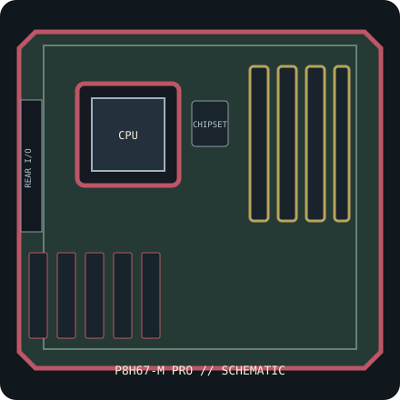

[ INDIVIDUAL COMPONENT // SYSTEM BOARD ]
ASUS P8H67-M PRO (PCB Rev. 3.0 / B3)
Intel H67 B3 / LGA1155 microATX board, 2011. PCB revision 3.0, DDR3 and integrated display connectors; check the CPU list and BIOS. This record identifies one exact SKU/revision; verify the silkscreened board marking before firmware or component selection.

IDENTIFICATION: This entry is for P8H67-M PRO, PCB revision 3.0 (Intel B3 stepping). Similar family names, chipset stepping and board revisions may use incompatible BIOS, layouts or connectors.
Specifications & compatibility
| Exact board / PCB revision | P8H67-M PRO — PCB revision 3.0 (Intel B3 stepping) |
|---|---|
| Platform / socket / chipset | 2011 Intel desktop platform; LGA1155; Intel H67 Express, B3 stepping |
| CPU compatibility | LGA1155 second-generation Intel Core i7/i5/i3 and other exact CPUs in ASUS P8H67-M PRO Rev. 3.0 CPU list. Later CPUs are supported only if individually listed with required BIOS; LGA1156/LGA1150 do not fit. |
| Form factor / dimensions | microATX, 244 × 244 mm |
| Memory | Four dual-channel DDR3 DIMM sockets, up to 32 GB non-ECC unbuffered DDR3; supported rate depends on CPU and memory population. |
| Expansion | One PCIe 2.0 x16, one PCIe x4-length slot and two legacy PCI slots. |
| Storage | Two Intel SATA 6 Gb/s and four SATA 3 Gb/s ports; consult board manual for controller mapping and RAID support. |
| External I/O | Integrated display outputs include VGA, DVI-D and HDMI (CPU graphics required); rear USB 3.0/2.0, PS/2, Gigabit Ethernet, audio and S/PDIF. |
| BIOS / firmware support | ASUS EFI BIOS with EZ Flash 2 and CrashFree BIOS 3. Use BIOS support files for P8H67-M PRO Rev. 3.0 and verify each processor’s minimum BIOS; B3 chipset stepping is required to avoid affected early Cougar Point boards. |
| PSU / case compatibility | microATX-compatible case supporting 244 × 244 mm and the board’s mounting/I/O pattern. PSU requires 24-pin main ATX and 8-pin CPU 12 V leads. |
Installation and service notes
Confirm the exact CPU, minimum BIOS, DIMM type/capacity and supported slot/port mapping in the board-specific vendor support documents before purchase or installation. Socket fit is not proof of processor support; similarly named board firmware must not be cross-flashed.
Use ESD-safe handling, inspect the board for socket damage, leakage and corrosion, and keep loose screws or conductive debris away from the PCB. Check the case standoffs, PSU leads and cooler clearance against the manual before first power-on.
Manufacturer and manual sources
- ASUS P8H67-M PRO specificationsOfficial manufacturer specification entry for this model.
- ASUS P8H67-M PRO manual and BIOS supportOfficial manufacturer manual or revision-specific downloads for installation, CPU compatibility and BIOS support.
Specifications are archived for identification, not a guarantee that an aged board or used component is functional. Use the exact-revision vendor materials for final compatibility decisions.